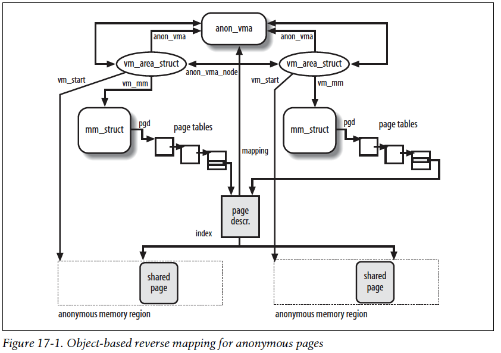
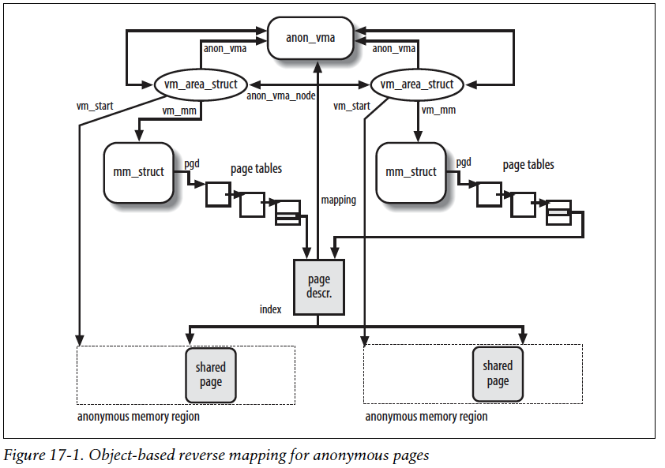

Linux Reverse Map¶

Read those carefully, you will understand:
- PDF: Object-based Reverse Mapping
- LWN: Virtual Memory II: the return of objrmap
- LWN: The object-based reverse-mapping VM
 

I used to implement the basic PTE-chain based rmap for LegoOS.
I can see the downsides of it. I tried to understand the
linux rmap before, somehow gave up because I couldn’t fully
understand one thing:
for a page that is shared among multiple processes’ VMAs, the source code
suggests it will always have same offset from the beginning of
all VMA (i.e., vm_start). But does it actually works like this
for ALL cases? I just think it’s possible that a page is mapped
by an VMA which has a slightly different starting address.
I still have doubt about it. But after accepting this assumption, it’s just easy to understand. I will check later on.
The code suggests:
- The offset of a page is saved in
page->index. - For anonmouys pages, the
page->indexis saved by page_set_anon_rmap(). - When doing rmap walk over multiple VMAs:
- For anon:
unsigned long address = vma_address(page, vma); - For file:
unsigned long address = vma_address(page, vma); - And
vma_address()is basicallypage->index
1 2 3 4 5 6 | static inline unsigned long __vma_address(struct page *page, struct vm_area_struct *vma) { pgoff_t pgoff = page_to_pgoff(page); return vma->vm_start + ((pgoff - vma->vm_pgoff) << PAGE_SHIFT); } |
Compared to basic PTE-chain based solution, object-based rmap:
The real benefit
- During page fault, we only need to set
page->mappingto point tostruct anon_vma, rather than allocating a new structure and insert.
The downside
- During rmap walk, we need extra computation to walk each VMA’s page table to make sure that the page is actually mapped within this specific VMA.
Adding struct anon_vma is really similar to the idea of reusing address_space,
i.e., having a data structure trampoline.
Some more boring details:
- All pages within a single VMA share just one
anon_vma.vma->anon_vmaindicates if a VMA has attached or note. Related function isanon_vma_prepare()withindo_anonymous_fault()1.
–
Yizhou Shan 
Created: Jun 16, 2019
Last Updated: Jun 17, 2019